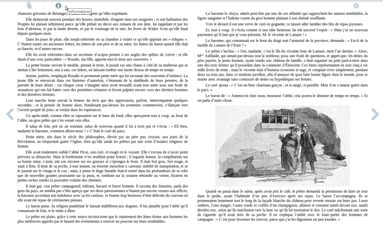

Développeuse chez TEA
@annso_
Directeur technique chez af83
@brmichel

…
http://www.w3.org/2009/dap/
http://tux-pla.net/mb8
http://www.mozilla.org/apps/
+1 pour JSConsole.com
Bonus : en profiter pour tester l'expérience utilisateur